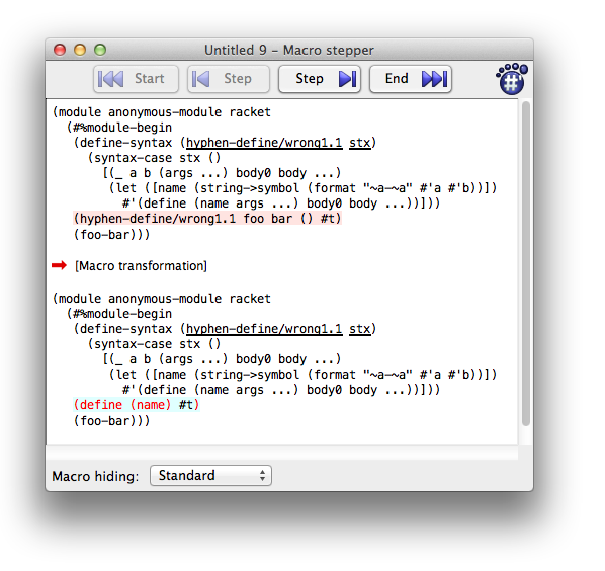

Fear of Macros

Contents:
4.1 "A pattern variable can’t be used outside of a template" |
1 Preface
I learned Racket after 25 years of mostly using C and C++.
Some psychic whiplash resulted.
"All the parentheses" was actually not a big deal. Instead, the first mind warp was functional programming. Before long I wrapped my brain around it, and went on to become comfortable and effective with many other aspects and features of Racket.
But two final frontiers remained: Macros and continuations.
I found that simple macros were easy and understandable, plus there were many good tutorials available. But the moment I stepped past routine pattern-matching, I kind of fell off a cliff into a terminology soup. I marinaded myself in material, hoping it would eventually sink in after enough re-readings. I even found myself using trial and error, rather than having a clear mental model what was going on. Gah.
I’m starting to write this at the point where the shapes are slowly emerging from the fog.
If you have any corrections, criticisms, complaints, or whatever, please let me know.
My primary motive is selfish. Explaining something forces me to learn it more thoroughly. Plus if I write something with mistakes, other people will be eager to point them out and correct me. Is that a social-engineering variation of meta-programming? Next question, please. :)
Finally I do hope it may help other people who have a similar background and/or learning style as me.
I want to show how Racket macro features have evolved as solutions to problems or annoyances. I learn more quickly and deeply when I discover the answer to a question I already have, or find the solution to a problem whose pain I already feel. Therefore I’ll give you the questions and problems first, so that you can better appreciate and understand the answers and solutions.
2 The plan of attack
The macro system you will mostly want to use for production-quality macros is called syntax-parse. And don’t worry, we’ll get to that soon.
But if we start there, you’re likely to feel overwhelmed by concepts and terminology, and get very confused. I did.
1. Instead let’s start with the basics: A syntax object and a function to change it (a "transformer"). We’ll work at that level for awhile to get comfortable and to de-mythologize this whole macro business.
2. Next, we’ll realize that some pattern-matching would make life easier. We’ll learn about syntax-case and its shorthand cousin, define-syntax-rule. We’ll discover we can get confused if we want to munge pattern variables before sticking them back in the template, and learn how to do that.
3. At this point we’ll be able to write many useful macros. But, what
if we want to write the ever-popular anaphoric if, with a "magic
variable"? It turns out we’ve been protected from making certain kind
of mistakes. When we want to do this kind of thing on purpose, we use
a syntax parameter. [There are other, older ways to do this. We won’t
look at them. We also won’t spend a lot of time
advocating "hygiene"—
4. Finally, we’ll realize that our macros could be smarter when they’re used in error. Normal Racket functions optionally can have contracts and types. These catch usage mistakes and provide clear, useful error messages. It would be great if there were something similar for macro. There is. One of the more-recent Racket macro enhancements is syntax-parse.
3 Transformers
YOU ARE INSIDE A ROOM. |
THERE ARE KEYS ON THE GROUND. |
THERE IS A SHINY BRASS LAMP NEARBY. |
|
IF YOU GO THE WRONG WAY, YOU WILL BECOME |
HOPELESSLY LOST AND CONFUSED. |
|
> pick up the keys |
|
YOU HAVE A SYNTAX TRANSFORMER |
3.1 What is a syntax transformer?
A syntax transformer is not one of the トランスフォーマ transformers.
Instead, it is simply a function. The function takes syntax and returns syntax. It transforms syntax.
Here’s a transformer function that ignores its input syntax, and always outputs syntax for a string literal:
> (define-syntax foo (lambda (stx) (syntax "I am foo")))
Using it:
> (foo) "I am foo"
When we use define-syntax, we’re making a transformer binding. This tells the Racket compiler, "Whenever you encounter a chunk of syntax starting with foo, please give it to my transformer function, and replace it with the syntax I give back to you." So Racket will give anything that looks like (foo ...) to our function, and we can return new syntax to use instead. Much like a search-and-replace.
Maybe you know that the usual way to define a function in Racket:
is shorthand for:
That shorthand lets you avoid typing lambda and some parentheses.
Well there is a similar shorthand for define-syntax:
> (define-syntax (also-foo stx) (syntax "I am also foo")) > (also-foo) "I am also foo"
What we want to remember is that this is simply shorthand. We are still defining a transformer function, which takes syntax and returns syntax. Everything we do with macros, will be built on top of this basic idea. It’s not magic.
Speaking of shorthand, there is also a shorthand for syntax, which is #’:
> (define-syntax (quoted-foo stx) #'"I am also foo, using #' instead of syntax") > (quoted-foo) "I am also foo, using #' instead of syntax"
We’ll use the #’ shorthand from now on.
Of course, we can emit syntax that is more interesting than a string literal. How about returning (displayln "hi")?
> (define-syntax (say-hi stx) #'(displayln "hi")) > (say-hi) hi
When Racket expands our program, it sees the occurrence of (say-hi), and sees it has a transformer function for that. It calls our function with the old syntax, and we return the new syntax, which is used to evaluate and run our program.
3.2 What’s the input?
Our examples so far ignored the input syntax, and output a fixed syntax. But instead of throwing away the input, usually we want to transform the input.
Let’s start by looking closely at what the input actually is:
> (define-syntax (show-me stx) (print stx) #'(void)) > (show-me '(i am a list)) #<syntax:10:0 (show-me (quote (i am a list)))>
The (print stx) shows what our transformer is given: a syntax object.
A syntax object consists of several things. The first part is the s-expression representing the code, such as '(+ 1 2).
Racket syntax is also decorated with some interesting information such as the source file, line number, and column. Finally, it has information about lexical scoping (which you don’t need to worry about now, but will turn out to be important later.)
There are a variety of functions available to access a syntax object. Let’s define a piece of syntax:
> (define stx #'(if x (list "true") #f)) > stx #<syntax:11:0 (if x (list "true") #f)>
Now let’s use functions that access the syntax object. The source information functions:
(syntax-source stx) is returning 'eval, only becaue of how I’m generating this documentation, using an evaluator to run code snippets in Scribble. Normally this would be somthing like "my-file.rkt".
> (syntax-source stx) 'eval
> (syntax-line stx) 11
> (syntax-column stx) 0
More interesting is the syntax "stuff" itself. syntax->datum converts it completely into an s-expression:
> (syntax->datum stx) '(if x (list "true") #f)
Whereas syntax-e only goes "one level down". It may return a list that has syntax objects:
> (syntax-e stx) '(#<syntax:11:0 if> #<syntax:11:0 x> #<syntax:11:0 (list "true")> #<syntax:11:0 #f>)
Each of those syntax objects could be converted by syntax-e,
and so on recursively—
In most cases, syntax->list gives the same result as syntax-e:
> (syntax->list stx) '(#<syntax:11:0 if> #<syntax:11:0 x> #<syntax:11:0 (list "true")> #<syntax:11:0 #f>)
When would syntax-e and syntax->list differ? Let’s not get side-tracked now.
When we want to transform syntax, we’ll generally take the pieces we were given, maybe rearrange their order, perhaps change some of the pieces, and often introduce brand-new pieces.
3.3 Actually transforming the input
Let’s write a transformer function that reverses the syntax it was given:
> (define-syntax (reverse-me stx) (datum->syntax stx (reverse (cdr (syntax->datum stx))))) > (reverse-me "backwards" "am" "i" values) "i"
"am"
"backwards"
Understand Yoda, can we. Great, but how does this work?
First we take the input syntax, and give it to syntax->datum. This converts the syntax into a plain old list:
> (syntax->datum #'(reverse-me "backwards" "am" "i" values)) '(reverse-me "backwards" "am" "i" values)
Using cdr slices off the first item of the list, reverse-me, leaving the remainder: ("backwards" "am" "i" values). Passing that to reverse changes it to (values "i" "am" "backwards"):
> (reverse (cdr '("backwards" "am" "i" values))) '(values "i" "am")
Finally we use syntax->datum to convert this back to syntax:
> (datum->syntax #f '(values "i" "am" "backwards")) #<syntax (values "i" "am" "backwards")>
That’s what our transformer function gives back to the Racket compiler, and that syntax is evaluated:
> (values "i" "am" "backwards") "i"
"am"
"backwards"
3.4 Compile time vs. run time
(define-syntax (foo stx) (make-pipe) ;This is not run time. #'(void))
Normal Racket code runs at ... run time. Duh.
Instead of "compile time vs. run time", you may hear it described as "syntax phase vs. runtime phase". Same difference.
But a syntax transformer is called by Racket as part of the process of parsing, expanding, and compiling our program. In other words, our syntax transformer function is evaluated at compile time.
This aspect of macros lets you do things that simply aren’t possible in normal code. One of the classic examples is something like the Racket form, if:
(if <condition> <true-expression> <false-expression>)
If we implemented if as a function, all of the arguments would be evaluated before being provided to the function.
> (define (our-if condition true-expr false-expr) (cond [condition true-expr] [else false-expr]))
> (our-if #t "true" "false") "true"
That seems to work. However, how about this:
> (define (display-and-return x) (displayln x) x)
> (our-if #t (display-and-return "true") (display-and-return "false"))
true
false
"true"
One answer is that functional programming is good, and side-effects are bad. But avoiding side-effects isn’t always practical.
Oops. Because the expressions have a side-effect, it’s obvious that
they are both evaluated. And that could be a problem—
So this simply can’t work as a plain function. However a syntax transformer can rearrange the syntax – rewrite the code – at compile time. The pieces of syntax are moved around, but they aren’t actually evaluated until run time.
Here is one way to do this:
> (define-syntax (our-if-v2 stx) (define xs (syntax->list stx)) (datum->syntax stx `(cond [,(cadr xs) ,(caddr xs)] [else ,(cadddr xs)])))
> (our-if-v2 #t (display-and-return "true") (display-and-return "false")) true
"true"
> (our-if-v2 #f (display-and-return "true") (display-and-return "false")) false
"false"
That gave the right answer. But how? Let’s pull out the transformer function itself, and see what it did. We start with an example of some input syntax:
> (define stx #'(our-if-v2 #t "true" "false")) > (displayln stx) #<syntax:32:0 (our-if-v2 #t "true" "false")>
1. We take the original syntax, and use syntax->datum to change it into a plain Racket list:
> (define xs (syntax->datum stx)) > (displayln xs) (our-if-v2 #t true false)
2. To change this into a Racket cond form, we need to take
the three interesting pieces—
`(cond [,(cadr xs) ,(caddr xs)] [else ,(cadddr xs)])
3. Finally, we change that into syntax using datum->syntax:
> (datum->syntax stx `(cond [,(cadr xs) ,(caddr xs)] [else ,(cadddr xs)])) #<syntax (cond (#t "true") (else "fals...>
So that works, but using cadddr etc. to destructure a list is painful and error-prone. Maybe you know Racket’s match? Using that would let us do pattern-matching.
Notice that we don’t care about the first item in the syntax list. We didn’t take (car xs) in our-if-v2, and we didn’t use name when we used pattern-matching. In general, a syntax transformer won’t care about that, because it is the name of the transformer binding. In other words, a macro usually doesn’t care about its own name.
Instead of:
> (define-syntax (our-if-v2 stx) (define xs (syntax->list stx)) (datum->syntax stx `(cond [,(cadr xs) ,(caddr xs)] [else ,(cadddr xs)])))
We can write:
> (define-syntax (our-if-using-match stx) (match (syntax->list stx) [(list name condition true-expr false-expr) (datum->syntax stx `(cond [,condition ,true-expr] [else ,false-expr]))])) > (our-if-using-match #t "true" "false") match: undefined;
cannot reference an identifier before its definition
in module: 'program
phase: 1
But wait, we can’t. It’s complaining that match isn’t defined. We haven’t required the racket/match module?
It turns out we haven’t. Remember, this transformer function is
working at compile time, not run time. And at compile time, only
racket/base is required for you automatically. If we want
something like racket/match, we have to require it
ourselves—
So let’s try that:
> (require (for-syntax racket/match))
> (define-syntax (our-if-using-match-v2 stx) (match (syntax->list stx) [(list _ condition true-expr false-expr) (datum->syntax stx `(cond [,condition ,true-expr] [else ,false-expr]))])) > (our-if-using-match-v2 #t "true" "false") "true"
3.5 begin-for-syntax
We used for-syntax to require the racket/match module because we needed to use match at compile time.
What if we wanted to define our own helper function to be used by a macro? One way to do that is put it in another module, and require it using for-syntax, just like we did with the racket/match module.
If instead we want to put the helper in the same module, we can’t
simply define it and use it—
(begin-for-syntax (define (my-helper-function ....) ....)) (define-syntax (macro-using-my-helper-function stx) (my-helper-function ....) ....)
In the simple case, we can also use define-for-syntax, which composes begin-for-syntax and define:
(define-for-syntax (my-helper-function ....) ....) (define-syntax (macro-using-my-helper-function stx) (my-helper-function ....) ....)
To review:
Syntax transformers work at compile time, not run time. The good news is this means we can do things like rearrange the pieces of syntax without evaluating them. We can implement forms like if that simply couldn’t work properly as run time functions.
More good news is that there isn’t some special, weird language for writing syntax transformers. We can write these transformer functions using the Racket language we already know and lovex.
The semi-bad news is that the familiarity can make it easy to forget that we’re not working at run time. Sometimes that’s important to remember.
For example only racket/base is required for us automatically. If we need other modules, we have to require them, and do so for compile time using for-syntax.
Similarly, if we want to define helper functions in the same file/module as the macros that use them, we need to wrap the definitions inside a begin-for-syntax form. Doing so makes them available at compile time.
4 Pattern matching: syntax-case and syntax-rules
Most useful syntax transformers work by taking some input syntax, and rearranging the pieces into something else. As we saw, this is possible but tedious using list accessors such as cadddr. It’s more convenient and less error-prone to use match to do pattern-matching.
Historically, syntax-case and syntax-rules pattern matching came first. match was added to Racket later.
It turns out that pattern-matching was one of the first improvements to be added to the Racket macro system. It’s called syntax-case, and has a shorthand for simple situations called define-syntax-rule.
Recall our previous example:
(require (for-syntax racket/match)) (define-syntax (our-if-using-match-v2 stx) (match (syntax->list stx) [(list _ condition true-expr false-expr) (datum->syntax stx `(cond [,condition ,true-expr] [else ,false-expr]))]))
Here’s what it looks like using syntax-case:
> (define-syntax (our-if-using-syntax-case stx) (syntax-case stx () [(_ condition true-expr false-expr) #'(cond [condition true-expr] [else false-expr])])) > (our-if-using-syntax-case #t "true" "false") "true"
Pretty similar, huh? The pattern matching part looks almost exactly the same. The way we specify the new syntax is simpler. We don’t need to do quasi-quoting and unquoting. We don’t need to use datum->syntax. Instead, we supply a "template", which uses variables from the pattern.
There is a shorthand for simple pattern-matching cases, which expands into syntax-case. It’s called define-syntax-rule:
> (define-syntax-rule (our-if-using-syntax-rule condition true-expr false-expr) (cond [condition true-expr] [else false-expr])) > (our-if-using-syntax-rule #t "true" "false") "true"
Here’s the thing about define-syntax-rule. Because it’s so
simple, define-syntax-rule is often the first thing people are
taught about macros. But it’s almost deceptively simple. It looks so
much like defining a normal run time function—
Most of the materials I found for learning macros, including the Racket Guide, do a very good job explaining how patterns and templates work. I’m not going to regurgitate that here.
Sometimes, we need to go a step beyond the pattern and template. Let’s look at some examples, how we can get confused, and how to get it working.
4.1 "A pattern variable can’t be used outside of a template"
Let’s say we want to define a function with a hyphenated name, a-b,
but we supply the a and b parts separately. The Racket struct
macro does something like this: (struct foo (field1 field2))
automatically defines a number of functions whose names are variations
on the name foo—
So let’s pretend we’re doing something like that. We want to transform the syntax (hyphen-define a b (args) body) to the syntax (define (a-b args) body).
A wrong first attempt is:
> (define-syntax (hyphen-define/wrong1 stx) (syntax-case stx () [(_ a b (args ...) body0 body ...) (let ([name (string->symbol (format "~a-~a" a b))]) #'(define (name args ...) body0 body ...))])) eval:47:0: a: pattern variable cannot be used outside of a
template
in: a
Huh. We have no idea what this error message means. Well, let’s try to work it out. The "template" the error message refers to is the #'(define (name args ...) body0 body ...) portion. The let isn’t part of that template. It sounds like we can’t use a (or b) in the let part.
In fact, syntax-case can have as many templates as you want. The obvious, required template is the final expression supplying the output syntax. But you can use syntax (a.k.a. #’) on a pattern variable. This makes another template, albeit a small, "fun size" template. Let’s try that:
> (define-syntax (hyphen-define/wrong1.1 stx) (syntax-case stx () [(_ a b (args ...) body0 body ...) (let ([name (string->symbol (format "~a-~a" #'a #'b))]) #'(define (name args ...) body0 body ...))]))
No more error—
> (hyphen-define/wrong1.1 foo bar () #t) > (foo-bar) foo-bar: undefined;
cannot reference an identifier before its definition
in module: 'program
It seems we’re defining a function with a name other than foo-bar?
This is where the Macro Stepper in DrRacket is invaluable. Even if you prefer mostly to use Emacs, this is a situation where it’s worth using DrRacket at least temporarily for its Macro Stepper.

The Macro Stepper says that the use of our macro:
(hyphen-define/wrong1.1 foo bar () #t)
expanded to:
(define (name) #t)
Well that explains it. Instead, we wanted to expand to:
(define (foo-bar) #t)
Our template is using the symbol name but we wanted its value, such as foo-bar in this use of our macro.
A solution here is with-syntaxYou could consider with-syntax to mean, "define pattern variables"., which lets us say that name is something whose value can be used in our output template. In effect, it lets us say that name is an additional pattern variable.
> (define-syntax (hyphen-define/wrong1.3 stx) (syntax-case stx () [(_ a b (args ...) body0 body ...) (with-syntax ([name (datum->syntax stx (string->symbol (format "~a-~a" #'a #'b)))]) #'(define (name args ...) body0 body ...))])) > (hyphen-define/wrong1.3 foo bar () #t) > (foo-bar) foo-bar: undefined;
cannot reference an identifier before its definition
in module: 'program
Hmm. foo-bar is still not defined. Back to the Macro Stepper. It says now we’re expanding to:
(define (|#<syntax:11:24foo>-#<syntax:11:28 bar>|) #t)
Oh right: #'a and #'b are syntax objects, and format is printing them as such. Instead we want the datum in the syntax objects (the symbols foo and bar). Let’s use syntax->datum:
> (define-syntax (hyphen-define/ok1 stx) (syntax-case stx () [(_ a b (args ...) body0 body ...) (with-syntax ([name (datum->syntax stx (string->symbol (format "~a-~a" (syntax->datum #'a) (syntax->datum #'b))))]) #'(define (name args ...) body0 body ...))])) > (hyphen-define/ok1 foo bar () #t) > (foo-bar) #t
And now it works!
By the way, there is a utility function in racket/syntax called format-id that lets us format identifier names more succinctly. As we’ve learned, we need to require the module using for-syntax, since we need it at compile time:
> (require (for-syntax racket/syntax))
> (define-syntax (hyphen-define/ok2 stx) (syntax-case stx () [(_ a b (args ...) body0 body ...) (with-syntax ([name (format-id stx "~a-~a" #'a #'b)]) #'(define (name args ...) body0 body ...))])) > (hyphen-define/ok2 bar baz () #t) > (bar-baz) #t
Using format-id is convenient as it handles the tedium of converting from syntax to datum and back again.
To review:
If you want to munge pattern variables for use in the template, with-syntax is your friend.
You will need to use syntax or #’ on the pattern variables to turn them into "fun size" templates.
Usually you’ll also need to use syntax->datum to get the interesting value inside.
format-id is convenient for formatting identifier names.
4.2 Making our own struct
In this example we’ll pretend that Racket doesn’t already have a struct capability. Fortunately, we can define a macro to provide this feature. To keep things simple, our structure will be immutable (read-only) and it won’t support inheritance.
Given a structure declaration like:
(our-struct name (field1 field2 ...))
We need to define some procedures.
A constructor procedure whose name is the struct name. We’ll represent structures as a vector. The structure name will be element zero. The fields will be elements one onward.
A predicate, whose name is the struct name with ? appended.
For each field, an accessor procedure to get its value. These will be named struct-field (the name of the struct, a hyphen, and the field name).
> (require (for-syntax racket/syntax))
> (define-syntax (our-struct stx) (syntax-case stx () [(_ id (fields ...)) (with-syntax ([pred-id (format-id stx "~a?" #'id)]) #`(begin ; Define a constructor. (define (id fields ...) (apply vector (cons 'id (list fields ...)))) ; Define a predicate. (define (pred-id v) (and (vector? v) (eq? (vector-ref v 0) 'id))) ; Define an accessor for each field. #,@(for/list ([x (syntax->list #'(fields ...))] [n (in-naturals 1)]) (with-syntax ([acc-id (format-id stx "~a-~a" #'id x)] [ix n]) #`(define (acc-id v) (unless (pred-id v) (error 'acc-id "~a is not a ~a struct" v 'id)) (vector-ref v ix))))))])) ; Test it out > (require rackunit) > (our-struct foo (a b)) > (define s (foo 1 2)) > (check-true (foo? s)) > (check-false (foo? 1)) > (check-equal? (foo-a s) 1) > (check-equal? (foo-b s) 2)
> (check-exn exn:fail? (lambda () (foo-a "furble"))) ; The tests passed. ; Next, what if someone tries to declare: > (our-struct "blah" ("blah" "blah")) format-id: contract violation
expected: (or/c string? symbol? identifier? keyword? char?
number?)
given: #<syntax:71:0 "blah">
The error message is not very helpful. It’s coming from format-id, which is a private implementation detail of our macro.
You may know that a syntax-case clause can take an optional "guard" or "fender" expression. Instead of
[pattern template]
It can be:
[pattern guard template]
Let’s add a guard expression to our clause:
> (require (for-syntax racket/syntax))
> (define-syntax (our-struct stx) (syntax-case stx () [(_ id (fields ...)) ; Guard or "fender" expression: (for-each (lambda (x) (unless (identifier? x) (raise-syntax-error #f "not an identifier" stx x))) (cons #'id (syntax->list #'(fields ...)))) (with-syntax ([pred-id (format-id stx "~a?" #'id)]) #`(begin ; Define a constructor. (define (id fields ...) (apply vector (cons 'id (list fields ...)))) ; Define a predicate. (define (pred-id v) (and (vector? v) (eq? (vector-ref v 0) 'id))) ; Define an accessor for each field. #,@(for/list ([x (syntax->list #'(fields ...))] [n (in-naturals 1)]) (with-syntax ([acc-id (format-id stx "~a-~a" #'id x)] [ix n]) #`(define (acc-id v) (unless (pred-id v) (error 'acc-id "~a is not a ~a struct" v 'id)) (vector-ref v ix))))))])) ; Now the same misuse gives a better error message: > (our-struct "blah" ("blah" "blah")) eval:74:0: our-struct: not an identifier
at: "blah"
in: (our-struct "blah" ("blah" "blah"))
Later, we’ll see how syntax-parse makes it even easier to check usage and provide helpful messages about mistakes.
4.3 Using dot notation for nested hash lookups
The previous two examples used a macro to define functions whose names were made by joining identifiers provided to the macro. This example does the opposite: The identifier given to the macro is split into pieces.
If you write programs for web services you deal with JSON, which is represented in Racket by a jsexpr?. JSON often has dictionaries that contain other dictionaries. In a jsexpr? these are represented by nested hasheq tables.
JavaScript you can use dot notation:
foo = js.a.b.c;
In Racket it’s not so convenient:
; Nested hasheqs typical of a jsexpr: > (define js (hasheq 'a (hasheq 'b (hasheq 'c "value")))) ; Typical annoying code to get something: > (hash-ref (hash-ref (hash-ref js 'a) 'b) 'c) "value"
We can write a helper function to make this a bit cleaner:
; This helper function:
> (define/contract (hash-refs h ks [def #f]) ((hash? (listof any/c)) (any/c) . ->* . any) (with-handlers ([exn:fail? (const (cond [(procedure? def) (def)] [else def]))]) (for/fold ([h h]) ([k (in-list ks)]) (hash-ref h k)))) ; Lets us say: > (hash-refs js '(a b c)) "value"
That’s not bad. Can we go even further and use a dot notation somewhat like JavaScript?
; This macro: > (require (for-syntax racket/syntax))
> (define-syntax (hash.refs stx) (syntax-case stx () [(_) (raise-syntax-error #f "Expected (hash.key0[.key1 ...] [default])" stx #'chain)] [(_ chain) #'(hash.refs chain #f)] [(_ chain default) (unless (symbol? (syntax-e #'chain)) (raise-syntax-error #f "Expected (hash.key0[.key1 ...] [default])" stx #'chain)) (let ([xs (map (lambda (x) (datum->syntax stx (string->symbol x))) (regexp-split #rx"\\." (symbol->string (syntax->datum #'chain))))]) (unless (and (>= (length xs) 2) (not (eq? (syntax-e (cadr xs)) '||))) (raise-syntax-error #f "Expected hash.key" stx #'chain)) (with-syntax ([h (car xs)] [ks (cdr xs)]) #'(hash-refs h 'ks default)))])) ; Gives us "sugar" to say this: > (hash.refs js.a.b.c) "value"
It works!
We’ve started to appreciate that our macros should give helpful messages when used in error. We tried to do that here. Let’s deliberately elicit various errors. Are the messages helpful?
> (hash.refs) eval:80:0: hash.refs: Expected (hash.key0[.key1 ...]
[default])
at: chain
in: (hash.refs)
> (hash.refs 0) eval:83:0: hash.refs: Expected (hash.key0[.key1 ...]
[default])
at: 0
in: (hash.refs 0 #f)
> (hash.refs js) eval:84:0: hash.refs: Expected hash.key
at: js
in: (hash.refs js #f)
> (hash.refs js.) eval:85:0: hash.refs: Expected hash.key
at: js.
in: (hash.refs js. #f)
Not too bad.
Maybe we’re not convinced that writing (hash.refs js.a.b.c) is really clearer than (hash-refs js '(a b c)). Maybe we won’t actually use this approach. But the Racket macro system makes it a possible choice.
5 Syntax parameters
"Anaphoric if" or "aif" is a popular macro example. Instead of writing:
(let ([tmp (big-long-calculation)]) (if tmp (foo tmp) #f))
You could write:
(aif (big-long-calculation) (foo it) #f)
In other words, when the condition is true, an it identifier is automatically created and set to the value of the condition. This should be easy:
> (define-syntax-rule (aif condition true-expr false-expr) (let ([it condition]) (if it true-expr false-expr))) > (aif #t (displayln it) (void)) it: undefined;
cannot reference an identifier before its definition
in module: 'program
Wait, what? it is undefined?
It turns out that all along we have been protected from making a certain kind of mistake in our macros. The mistake is if our new syntax introduces a variable that accidentally conflicts with one in the code surrounding our macro.
The Racket Reference section, Transformer Bindings, has a good explanation and example. Basically, syntax has "marks" to preserve lexical scope. This makes your macro behave like a normal function, for lexical scoping.
If a normal function defines a variable named x, it won’t conflict with a variable named x in an outer scope:
> (let ([x "outer"]) (let ([x "inner"]) (printf "The inner `x' is ~s\n" x)) (printf "The outer `x' is ~s\n" x))
The inner `x' is "inner"
The outer `x' is "outer"
When your macros also respect lexical scoping, it’s easy to write reliable macros that behave predictably.
So that’s wonderful default behavior. But sometimes we want
to introduce a magic variable on purpose—
The way to do this is with a "syntax parameter", using define-syntax-parameter and syntax-parameterize. You’re probably familiar with regular parameters in Racket:
> (define current-foo (make-parameter "some default value")) > (current-foo) "some default value"
> (parameterize ([current-foo "I have a new value, for now"]) (current-foo)) "I have a new value, for now"
> (current-foo) "some default value"
That’s a normal parameter. The syntax variation works similarly. The idea is that we’ll define it to mean an error by default. Only inside of our aif will it have a meaningful value:
> (require racket/stxparam)
> (define-syntax-parameter it (lambda (stx) (raise-syntax-error (syntax-e stx) "can only be used inside aif")))
> (define-syntax-rule (aif condition true-expr false-expr) (let ([tmp condition]) (if tmp (syntax-parameterize ([it (make-rename-transformer #'tmp)]) true-expr) false-expr))) > (aif 10 (displayln it) (void)) 10
> (aif #f (displayln it) (void))
Inside the syntax-parameterize, it acts as an alias for tmp. The alias behavior is created by make-rename-transformer.
If we try to use it outside of an aif form, and it isn’t otherwise defined, we get an error like we want:
> (displayln it) it: can only be used inside aif
But we can still define it as a normal variable:
> (define it 10) > it 10
6 Robust macros: syntax-parse
TO-DO.
TO-DO.
TO-DO.
7 What’s the point of splicing-let?
I stared at racket/splicing for the longest time. What does it do? Why would I use it? Why is it in the Macros section of the reference?
Step one, cut a hole in the box de-mythologize it. For example, using splicing-let like this:
> (require racket/splicing)
> (splicing-let ([x 0]) (define (get-x) x)) ; get-x is visible out here: > (get-x) 0
; but x is not: > x x: undefined;
cannot reference an identifier before its definition
in module: 'program
is equivalent to:
> (define get-y (let ([y 0]) (lambda () y))) ; get-y is visible out here: > (get-y) 0
; but y is not: > y y: undefined;
cannot reference an identifier before its definition
in module: 'program
This is the classic Lisp/Scheme/Racket idiom sometimes called "let over lambda". A koan about closures and objects. A closure hides y, which can only be accessed via get-y.
So why would we care about the splicing forms? They can be more concise, especially when there are multiple body forms:
> (require racket/splicing)
> (splicing-let ([x 0]) (define (inc) (set! x (+ x 1))) (define (dec) (set! x (- x 1))) (define (get) x))
The splicing variation is more convenient than the usual way:
> (define-values (inc dec get) (let ([x 0]) (values (lambda () ; inc (set! x (+ 1 x))) (lambda () ; dec (set! x (- 1 x))) (lambda () ; get x))))
When there are many body forms—
8 References and Acknowledgments
Eli Barzliay’s blog post, Writing ‘syntax-case’ Macros, helped me understand many key details and concepts. It also inspired me to use a "bottom-up" approach. However he wrote for a specific audience. If you’re not already familiar with un-hygienic defmacro style macros, it may seem slightly weird to the extent it’s trying to convince you to change an opinion you don’t have. I’m writing for people who don’t have any opinion about macros at all, except maybe that macros seem scary and daunting.
Eli wrote another blog post, Dirty Looking Hygiene, which explains syntax-parameterize. I relied heavily on that, mostly just updating it since his post was written before PLT Scheme was renamed to Racket.
Matthew Flatt’s Composable and Compilable Macros: You Want it When? explains how Racket handles compile time vs. run time.
Chapter 8 of The Scheme Programming Language by Kent Dybvig explains syntax-rules and syntax-case. Although more "formal" in tone, you may find it helpful to read it. You never know which explanation or examples of something will click for you.
After initially wondering if I was asking the wrong question and conflating two different issues :), Shriram Krishnamurthi looked at an early draft and encouraged me to keep going. Sam Tobin-Hochstadt and Robby Findler also encouraged me. Matthew Flatt showed me how to make a Scribble interaction print syntax as "syntax" rather than as "#'".
Finally, I noticed something strange. After writing much of this, when I returned to some parts of the Racket documentation, I noticed it had improved since I last read it. Of course, it was the same. I’d changed. It’s interesting how much of what we already know is projected between the lines. My point is, the Racket documentation is very good. The Guide provides helpful examples and tutorials. The Reference is very clear and precise.
9 Epilogue
"Before I had studied Chan (Zen) for thirty years, I saw mountains as mountains, and rivers as rivers. When I arrived at a more intimate knowledge, I came to the point where I saw that mountains are not mountains, and rivers are not rivers. But now that I have got its very substance I am at rest. For it’s just that I see mountains once again as mountains, and rivers once again as rivers"
–Buddhist saying originally formulated by Qingyuan Weixin, later translated by D.T. Suzuki in his Essays in Zen Buddhism.
Translated into Racket:
(dynamic-wind (lambda () (and (eq? 'mountains 'mountains) (eq? 'rivers 'rivers))) (lambda () (not (and (eq? 'mountains 'mountains) (eq? 'rivers 'rivers)))) (lambda () (and (eq? 'mountains 'mountains) (eq? 'rivers 'rivers))))